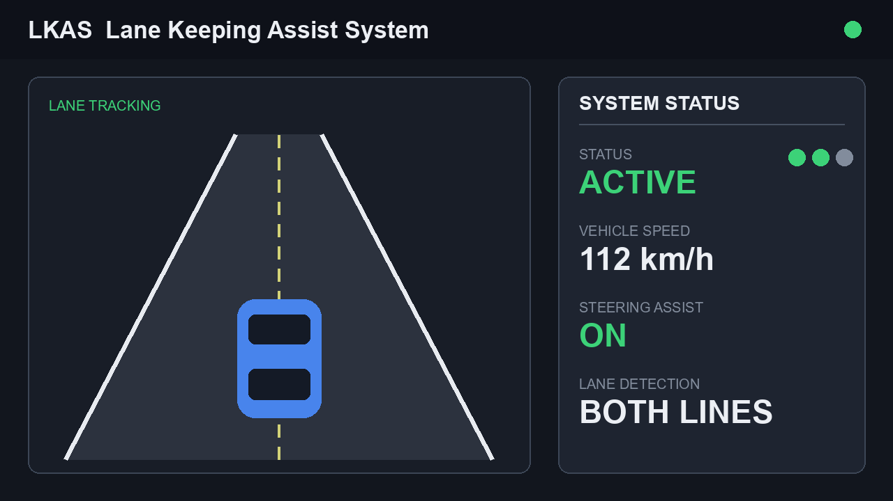
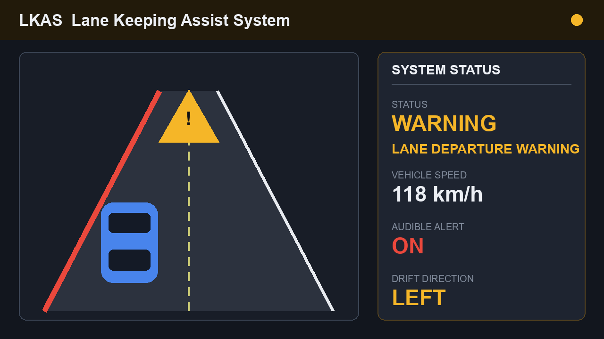

本書は、車線維持支援システム LKAS の車載ソフトウェアに関する仕様検討書である。システム概要、機能要求、状態遷移、主要シーケンス、1制御周期の処理フロー、機能安全に関する考慮、主要パラメータおよび外部インタフェースを示す。
本書は、車線維持支援システム(LKAS: Lane Keeping Assist System)の車載ソフトウェアに関する仕様検討書である。LKASは、前方単眼カメラによって自車前方の車線境界線を認識し、自車が車線中央付近を走行し続けるために必要な補助操舵トルクを電動パワーステアリング(EPS)へ指令する運転支援機能である。本機能はSAEレベル2相当の運転支援であり、運転の主体および最終責任は常にドライバにある。ドライバは操舵に手を添えた状態(ハンズオン)での使用を前提とし、システムは自動運転を提供するものではない。
対象車種は、Cセグメントクラスの乗用車を想定する。動作速度域は65km/hから180km/hとし、これを下回る低速域では操舵介入を行わず、車線逸脱のおそれがある場合は警報のみを行う。直線路および緩やかな曲線路を主たる対象とし、車線曲率が上限を超える急カーブでは作動を制限する。
センサ構成は、前方単眼カメラ、操舵角センサ、ヨーレートセンサ、車輪速センサ(車速)、および操舵トルクセンサからなる。前方カメラは車線境界線の横位置、自車のヨー角偏差、車線曲率、ならびに認識信頼度を周期的に出力する。アクチュエータとしてEPSを用い、ドライバへの情報提示手段としてメータ内表示(HMI)および警報ブザーを用いる。本システムは車両ネットワークを介して車速や方向指示器状態などの車両情報を取得する。
前提条件として、本システムの性能は区画線が明瞭に認識できる環境において保証される。悪天候、夜間、逆光、区画線のかすれや欠落、工事区間などの環境ではカメラの認識性能が低下し得るため、これらの状況では作動を制限または中断し、必要に応じてドライバへ通知する。本書に示す数値は検討段階の代表値であり、実車適合により確定する。
システム構成の概要を図1に示す。前方カメラおよび各車両センサから得られる情報はLKAS ECUに集約され、ECU内で車線推定、逸脱判定、制御演算が行われる。演算結果はEPSへの補助操舵トルク指令として出力されるとともに、メータおよび警報ブザーを介してドライバへ提示される。各信号は車載ネットワークを介して授受され、その詳細は表2に示すインタフェースに従う。
LKASソフトウェアに対する主要な機能要求を以下に示す。各機能要求には要求識別子(REQ-LKAS-xxx)を付与し、後段の設計項目および試験項目と双方向に追跡可能とする。
(1) 車線検出 [REQ-LKAS-010]: 前方カメラから取得した車線情報に基づき、左右の車線境界線および車線中心線を推定する。少なくとも片側の境界線が認識信頼度の閾値以上で得られる場合に車線検出成立とみなす。
(2) 逸脱判定 [REQ-LKAS-020]: 自車の車線内横偏差、ヨー角偏差、および車線逸脱予測時間(TLC: Time to Lane Crossing)を算出し、逸脱傾向の有無を判定する。TLCが閾値TLCthを下回る場合、または横偏差が警報閾値Ywarnを超える場合に逸脱傾向ありと判定する。
(3) 操舵トルク介入 [REQ-LKAS-030]: 車線中央へ復帰させるための目標補助操舵トルクを横偏差およびヨー角偏差から算出し、EPSへ指令する。補助トルクは最大値Tmaxで制限し、急変を避けるため立上り勾配を制限する。
(4) ドライバオーバーライド [REQ-LKAS-040]: ドライバの操舵トルクが判定閾値Tovrを超えた場合、ドライバの操舵意図を優先し、補助トルクを漸減して介入を中断する。方向指示器が操作された場合も同様に介入を抑制する。
(5) 警報 [REQ-LKAS-050]: 車線逸脱のおそれがある場合に視覚(メータ表示)および聴覚(ブザー)により警報する。あわせてシステムの作動状態およびフォールト発生をドライバへ表示する。
警報は逸脱のおそれの度合いに応じて表示と音で段階的に行い、操舵介入と警報は協調して動作する。操舵介入は連続的かつ滑らかに行い、ドライバに過度な違和感を与えないことを要求する。システムの作動・非作動および現在の作動状態は、ドライバが容易に認識できるようHMIへ常時表示する。
上記に加え、すべての制御演算は1制御周期内に完了すること、および安全関連機能は故障時に安全側へ作用することを非機能要求として課す。
LKASの作動状態は、OFF、STANDBY、ACTIVE、OVERRIDE、FAULTの5状態で管理する。初期状態はOFFである。
OFFはシステムが停止している状態であり、ドライバがシステムスイッチをONにするとSTANDBYへ遷移する。STANDBYは電源が投入されているが作動条件が未成立の状態であり、車速が作動速度域内であり、かつ車線が検出された場合にACTIVEへ遷移する。
ACTIVEは車線維持制御を実行している状態である。ACTIVE中にドライバの操舵トルクが閾値Tovrを超えるとOVERRIDEへ遷移し、補助トルクを抑制してドライバ操舵を優先する。ドライバの操舵が解除されると、OVERRIDEからACTIVEへ復帰する。作動条件が不成立となった場合(速度域外、車線ロスト等)はACTIVEからSTANDBYへ戻る。
いずれの作動状態(STANDBY/ACTIVE/OVERRIDE)においても、自己診断により故障が確定した場合はFAULTへ遷移し、フェールセーフ処理を実行する。FAULT遷移は他のすべての遷移に優先する。FAULTからは、イグニッションの再投入または故障要因の解消とリセットによりOFFへ遷移する。また、いずれの作動状態からもシステムスイッチOFFによりOFFへ遷移する。
車線逸脱の検知から操舵介入に至る主要なシーケンスを示す。まず前方カメラが一定周期で車線情報(横偏差、ヨー角偏差、曲率、信頼度)をLKAS ECUへ送信する。
LKAS ECUは受信した車線情報と車両運動情報(車速、ヨーレート、操舵角)から自車の車線内位置を推定し、横偏差およびTLCを算出する。算出結果に基づいて逸脱判定を行い、逸脱傾向ありと判定した場合はHMIへ逸脱警報要求を送信する。
続いて車線中央復帰のための目標補助操舵トルクを算出し、トルク制限および勾配制限を適用したうえでEPSへ補助操舵トルク指令を送信する。EPSは指令に応じて操舵系へトルクを付与し、自車を車線中央方向へ誘導する。
介入中もLKAS ECUはドライバ操舵トルクを監視し、オーバーライド条件が成立した場合は補助トルクを漸減して介入を中断し、制御の主体をドライバへ委ねる。一連の処理は制御周期ごとに繰り返し実行される。
本シーケンスにおける各処理は制御周期Tcに同期して実行される。カメラからの車線情報は制御周期より長い周期で更新されるため、ECU内で最新値を保持して用いる。車線逸脱検知から操舵介入の確立までの応答遅れは、安全性および違和感の観点から管理対象とする。
LKAS ECUは制御周期Tc(20ミリ秒)ごとに一連の処理を実行する。1制御周期内の処理は次の順序で行う。
まずセンサおよびカメラからの入力信号を取得し、各信号に対して妥当性診断(レンジチェック、タイムアウト監視、整合性チェック)を実施する。診断により故障が検出された場合は、補助トルクを漸減してフェールセーフへ移行し、FAULT状態として当該周期の制御演算を打ち切る。
故障が無い場合は車線推定を行い、横偏差、ヨー角偏差、曲率を更新する。次に作動条件(速度域、車線検出、ドライバ状態)を評価し、条件不成立であれば制御出力を停止してSTANDBY相当の出力とする。
条件成立時は逸脱判定および目標補助トルク算出を行い、ドライバオーバーライドの有無を確認する。オーバーライド時は補助トルクを抑制し、非オーバーライド時はトルク指令を確定する。最後にEPSへの補助トルク指令とHMI表示を更新し、周期内の自己診断結果を反映し、ウォッチドッグを更新して当該周期を終了する。
1制御周期内の各処理は、入力取得から出力更新までを制御周期内に確実に完了させる必要がある。このため、処理時間の最悪値(WCET)を見積もり、周期内に十分な時間的余裕を確保する。周期超過(オーバーラン)が発生した場合は異常として扱い、安全側の処理へ移行する。
本システムは、機能安全規格ISO 26262の考え方を踏まえて設計する。ここでは規格条文の引用は行わず、一般的な設計方針を述べる。意図しない操舵トルクの付与、および必要な介入の喪失や遅延は危険事象となり得るため、これらを抑止するための安全機構を設ける。
フォールト検出としては、各入力信号のレンジチェックおよび更新タイムアウト監視、通信フレームのチェックサム/CRC検証、複数センサ間の整合性によるクロスチェック、ならびに制御演算の妥当性監視(出力トルクの上限・勾配監視)を行う。カメラ認識信頼度の低下や車線ロストも作動継続可否の判断に用いる。
フェールセーフとしては、故障確定時に補助操舵トルクを急変させず漸減(ランプダウン)させたうえで介入を停止し、安全状態として操舵をドライバに委ねる。あわせてFAULT状態へ遷移し、ドライバへ警報および状態表示を行い、故障コード(DTC)を記録する。
演算の健全性はウォッチドッグおよび周期監視により担保し、想定外の処理停止やオーバーランを検出した場合も安全状態へ移行する。安全要求のうち重要度の高いものには相応のASILを割り当て、要求から設計・検証までの追跡性を確保する。独立した監視機能により、主機能の誤りを検出する多重化構成を基本方針とする。
アーキテクチャ上は、主たる制御演算とは独立した監視機能を設け、出力トルクの妥当性や演算結果の整合性を監視する。これにより、単一の故障が直ちに危険な操舵介入につながらないようにする。診断結果および故障履歴は不揮発メモリに記録し、サービス時の解析に供する。
本章では、LKASソフトウェアの主要な調整パラメータおよび外部インタフェースを示す。パラメータ表(表1)は制御周期や作動速度域、各種閾値・ゲインなどの代表値を示すものであり、実車適合により最終値を決定する。
インタフェース表(表2)はLKAS ECUが授受する主要信号の方向、接続先、データ型、範囲、更新周期を示す。なお本書に示す数値は検討段階の代表値であり、確定値ではない。詳細な信号定義およびタイミング制約は別途インタフェース設計書で規定する。
| ID | パラメータ名 | 記号 | 代表値 | 単位 | 説明 |
|---|---|---|---|---|---|
| P01 | 制御周期 | Tc | 20 | ms | 制御演算を実行する周期 |
| P02 | 作動下限車速 | Vmin | 65 | km/h | 操舵介入を許可する下限車速 |
| P03 | 作動上限車速 | Vmax | 180 | km/h | 操舵介入を許可する上限車速 |
| P04 | 最大補助操舵トルク | Tmax | 3.0 | N*m | EPSへ指令する補助トルクの上限 |
| P05 | トルク立上り勾配 | dTdt | 8.0 | N*m/s | 補助トルクの単位時間あたり変化上限 |
| P06 | オーバーライド判定トルク | Tovr | 2.0 | N*m | ドライバ操舵と判定する閾値 |
| P07 | 横偏差警報閾値 | Ywarn | 0.40 | m | 逸脱警報を発する横偏差閾値 |
| P08 | 逸脱予測時間閾値 | TLCth | 0.80 | s | 逸脱傾向ありと判定するTLC閾値 |
| P09 | 車線曲率上限 | Kmax | 0.0125 | 1/m | 作動を許可する曲率上限(R=80m) |
| P10 | カメラ有効認識距離 | Lcam | 60 | m | 車線認識を有効とする前方距離 |
| P11 | 横偏差制御ゲイン | Ky | 0.60 | - | 横偏差に対する制御ゲイン |
| P12 | ヨー角制御ゲイン | Kpsi | 1.20 | - | ヨー角偏差に対する制御ゲイン |
| P13 | フォールト確定時間 | Tfault | 100 | ms | 故障を確定するまでの継続時間 |
| P14 | 警報音圧 | Lwarn | 70 | dB(A) | 聴覚警報の音圧レベル |
| ID | 信号名 | 方向 | 接続先 | データ型 | 範囲/分解能 | 更新周期 | 説明 |
|---|---|---|---|---|---|---|---|
| I01 | VehicleSpeed | In | 車輪速/ABS | uint16 | 0..250 km/h | 10 ms | 自車速度 |
| I02 | SteeringAngle | In | 操舵角センサ | int16 | -720..720 deg | 10 ms | 操舵角 |
| I03 | YawRate | In | ヨーレートセンサ | int16 | -100..100 deg/s | 10 ms | ヨーレート |
| I04 | DriverTorque | In | 操舵トルクセンサ | int16 | -10..10 N*m | 10 ms | ドライバ操舵トルク |
| I05 | LaneInfo | In | 前方カメラ | struct | 横偏差/ヨー角/曲率/信頼度 | 33 ms | 車線情報 |
| I06 | TurnSignal | In | ボデーECU | enum | Off/Left/Right | 50 ms | 方向指示器状態 |
| I07 | SwitchInput | In | システムスイッチ | bool | 0/1 | 50 ms | システムON/OFF入力 |
| I08 | AssistTorqueCmd | Out | EPS | int16 | -3.0..3.0 N*m | 20 ms | 補助操舵トルク指令 |
| I09 | EnableStatus | Out | EPS | bool | 0/1 | 20 ms | 操舵介入許可 |
| I10 | LkasState | Out | メータ | enum | OFF/STANDBY/ACTIVE/OVERRIDE/FAULT | 100 ms | 作動状態表示 |
| I11 | WarnRequest | Out | メータ/ブザー | bool | 0/1 | 100 ms | 逸脱警報要求 |
| I12 | DTC | Out | 診断 | uint16 | 故障コード | イベント時 | 故障コード記録 |

